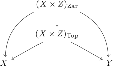

product topology coarser than zariski topology on the product
Proposition
Let $X,Y$ be quasi-projective varieties
Proof
follows from the universal property

which induces a continouos map from $(X \times Z)_{\mathrm{Zar}} \rightarrow (X \times Z)_{\mathrm{Top}}$
here the projection is a regular map, hence especially continuous (cf. regular function as continuous function ?)